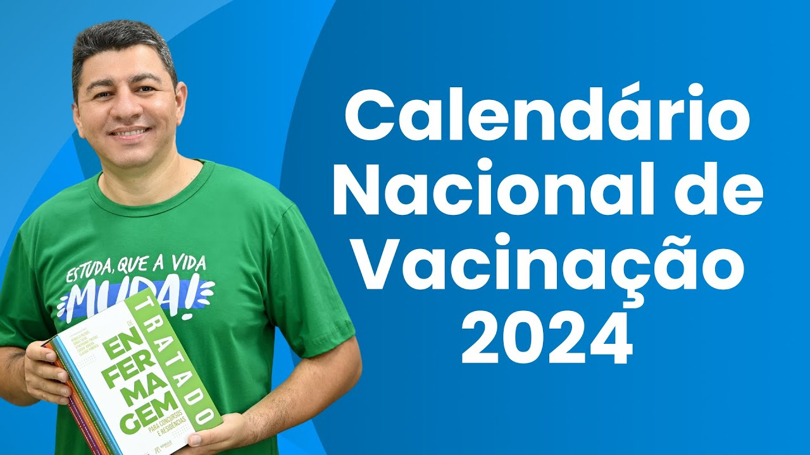
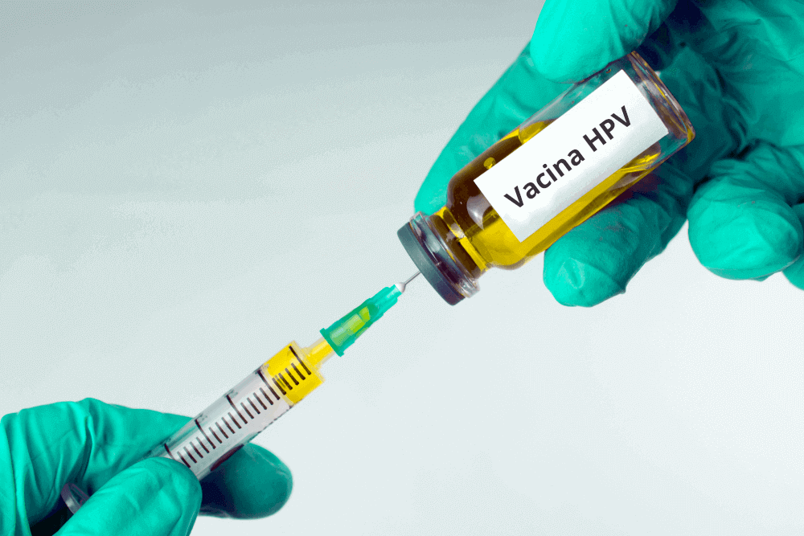
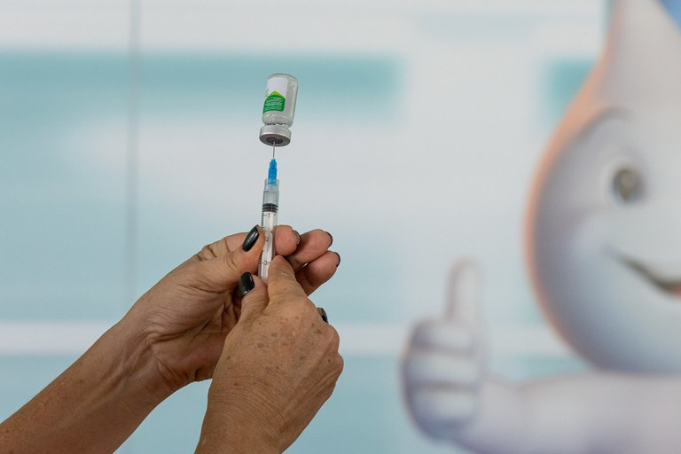

Bem-vindo ao VaxTrack
Vacinas em dia, saúde garantida.
Últimas Notícias

Calendário Nacional de Vacinação 2024
O Ministério da Saúde divulgou o novo Calendário Nacional de Vacinação para 2024, oferecendo 32 vacinas gratuitamente pelo SUS.
Publicado em 15 de janeiro de 2024

Nova Estratégia de Vacinação contra o HPV
A partir de 2024, a vacina contra o HPV será administrada em dose única, buscando aumentar a adesão e a cobertura vacinal.
Publicado em 2 de abril de 2024

Substituição da Vacina contra Poliomielite
A vacina oral contra a poliomielite será substituída por uma versão injetável a partir de 2024, conforme novas diretrizes do Ministério da Saúde.
Publicado em 8 de abril de 2024
Vacinas Pendentes
Atenção! As vacinas descritas abaixo estão pendentes, considere toma-las para se manter protegido.